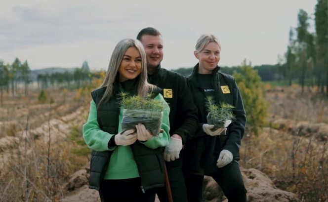

Общее дело,
Общее дело,живые встречи


Встреча, после которой растёт лес
«Сохрани лес» организует выезды с посадкой деревьев для ваших клиентов, бизнес-партнёров и коллег.
Один день на природе или поездка с ночёвкой: общее дело, разговоры и обед на свежем воздухе.